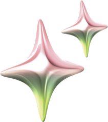
Imaginer, créer et amplifier votre présence digitale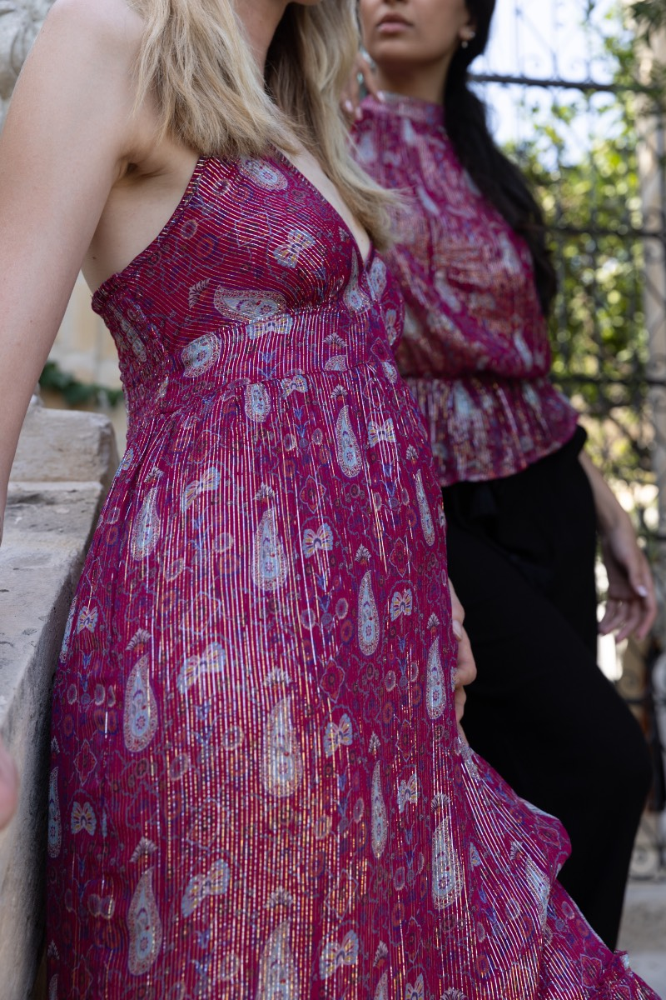
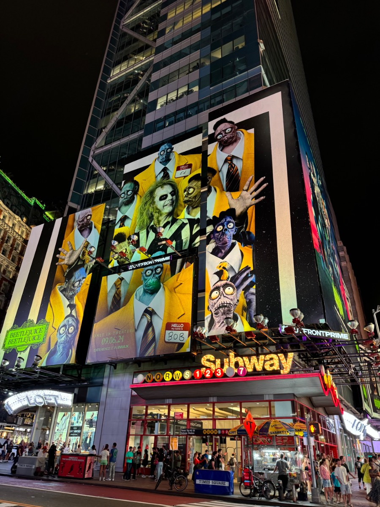
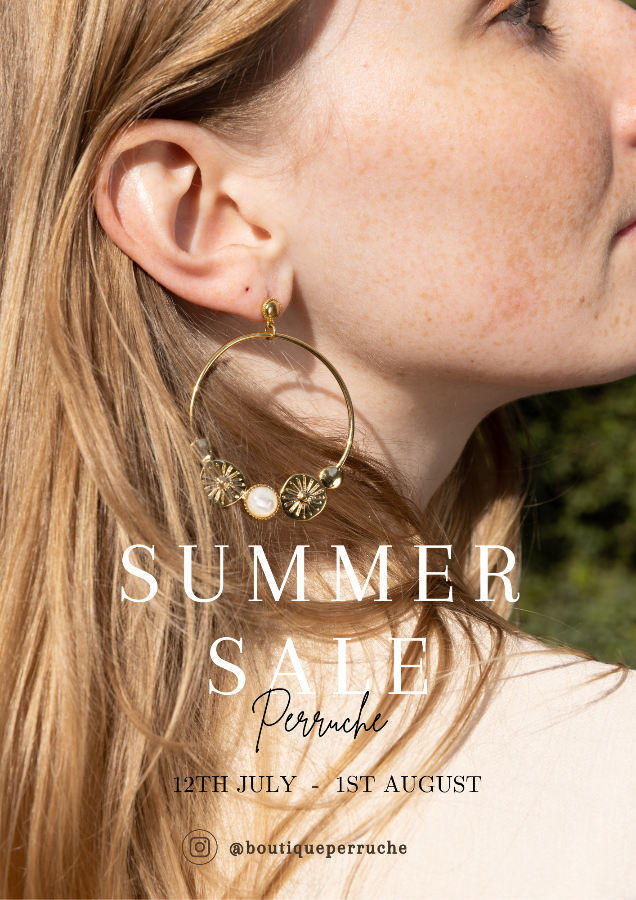
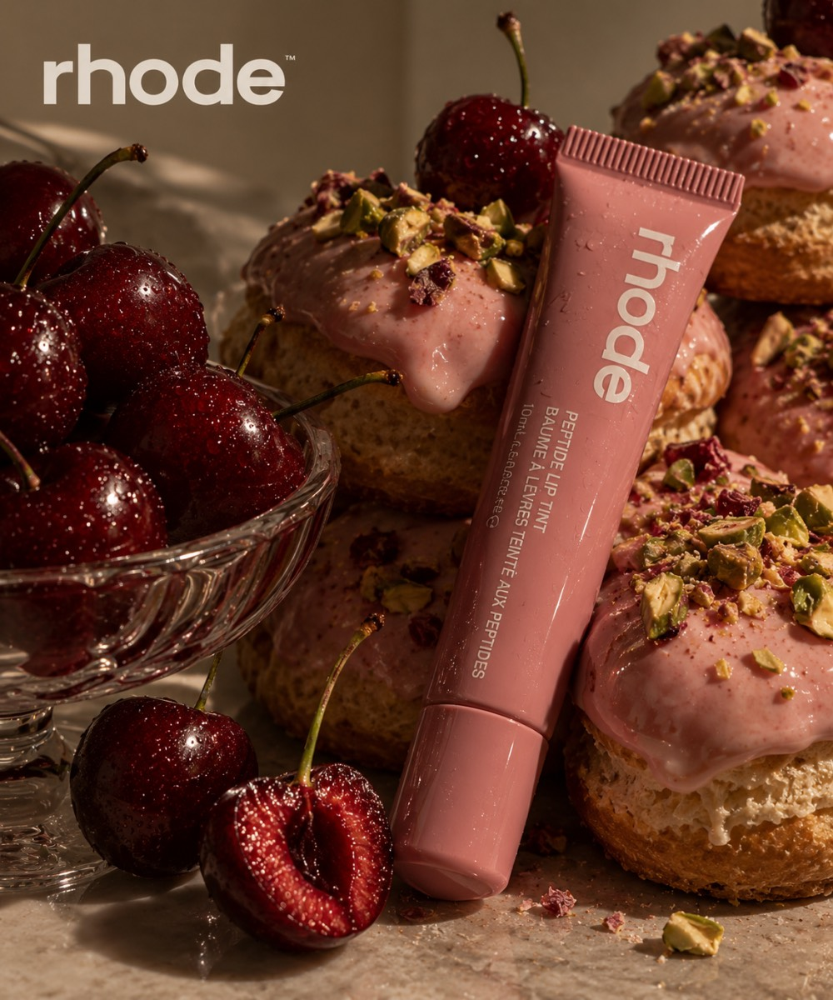
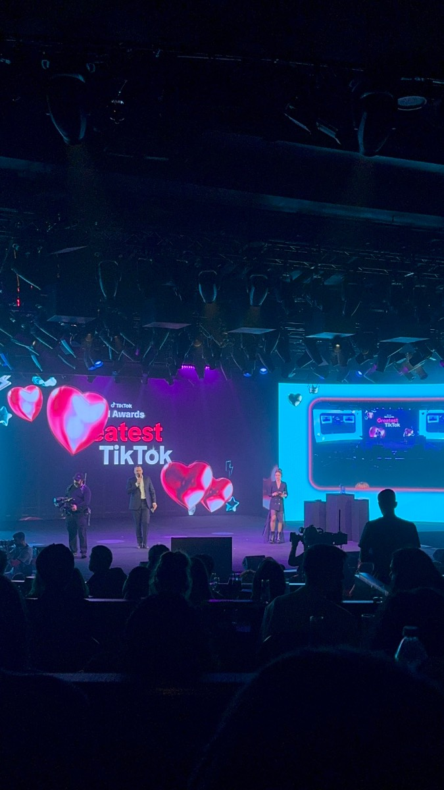
{{ catText }}
Projets en cours d'ajout.
{{ modalDesc }}
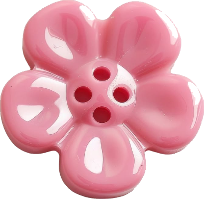
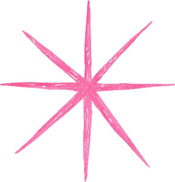
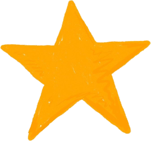
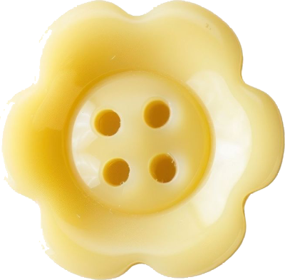
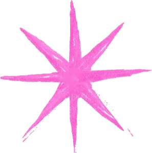
{{ m.text }}
{{ bl.text }}
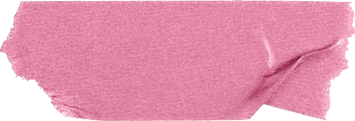
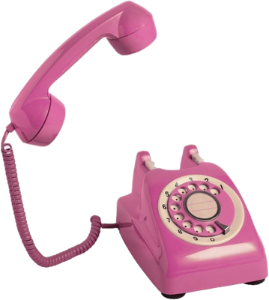
Missions freelance, collaborations ou postes en interne : le plus simple est de m'écrire sur LinkedIn.